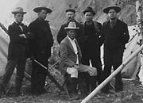
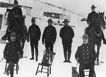
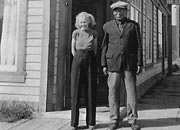
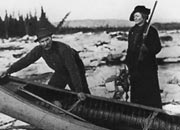
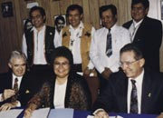

In the late 19th century the Yukon had a very small population most of whom were aboriginal. Anthropologist Catharine McClellan has estimated that there was possibly an average of less than a single person in a hundred square kilometres. Small groups of miners and trappers also lived here, working along some of the territory’s creeks and rivers.
There was little government presence; the territory was then still a provisional district of the Northwest Territory, and was governed from Regina. But in October 1897 the Yukon was “elevated to the dignity of a District”; the following year, on June 13, 1898, the Yukon Territory officially came into being.
At that time the territory was governed by Commissioner and Council who were appointed by Ottawa. It was another five years before the first Federal Minister visited the Yukon and ten years before the Yukon had an elected, and not an appointed, council. In the 1970s the territorial government adopted its present form. The territory’s status is similar to that of a province, although unlike provincial powers, territorial powers are derived from the Parliament of Canada and may be changed by Parliament. Most Yukon communities have a municipal government today.
In 1973 Yukon First Nations people began to negotiate land claims agreements with the federal and territorial governments, formalizing their arrangements over self-government, land-use, wildlife, education, justice and heritage. Today land claims legislation is enshrined in the Canadian constitution. These new partnerships give all Yukon people the opportunity to share in the responsibilities of government.
The dignity of a district
(Above) Mrs. Bratsburg on Dome, n.d. Dawson was the capital of the Yukon until 1953, when the seat of government was transferred to Whitehorse.
YA, Birchmore collection, 88/125 #69
Major James Morrow Walsh (c), seen here at Bennett, was appointed the first Commissioner of the Yukon in August 1897. His trip north was fraught with problems; he didn’t arrive in Dawson until May 1898, by which time he had decided to resign.
YA, Vancouver Public Library collection #2230
In the early years of the territory, the mounted police were the main — and sometimes the only — government presence.
YA, Johns collection, 82/318 #276
Gudrun Sparling (née Erickson) and Jim Boss in front of the Regina Hotel, c.1938. Jim Boss, or Kishwoot, was chief of the Southern Tutchone Ta’an Kwäch’än Lake Laberge people for more than 50 years. He is considered one of the fathers of the Yukon land claims process.
YA, Sparling collection, 92/34 #2
George and Martha Louise Black. George Black served three terms on the Yukon Council (1905-12) and was Commissioner from 1912 until 1916. He was elected as Conservative MP in 1921; when he had to retire because of poor health his wife ran in his stead, and won.
YA, Martha Louise Black collection #3258
(l-r, front) Minister of Northern Affairs Tom Sidden, Council of Yukon First Nations Grand Chief Judy Gingell, Government Leader John Ostashek, (r-l, back) Na-Cho Nyak Dun Chief Robert Hager, Vuntut Gwitchin Chief Robert Bruce Jr., Champagne and Aishihik Chief Paul Birckel and Teslin Tlingit Council Chief Dave Keenan at the land claims signing ceremony, May 29, 1993.
Government of the Yukon